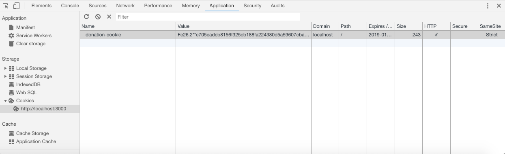

Objectives
Incorporate sessions tracking into the app, defining a session strategy, protected and unprotected routes and cookie paramaters.
Lab 6 Solutions
Exercise 1: Register users:
Extend the server objects to include a user map:
index.js
server.bind({
users: {},
donations: [],
});In signup, save the user details in the map:
app/controllers/accounts.js
signup: {
handler: function(request, h) {
const user = request.payload;
this.users[user.email] = user;
return h.redirect('/home');
}
},In login, only let user in if previously signed up:
login: {
handler: function(request, h) {
const user = request.payload;
if ((user.email in this.users) && (user.password === this.users[user.email].password)) {
return h.redirect('/home');
}
return h.redirect('/');
}
},Exercise 2: Current User
Track the current user once signed in - and display donor on report.
Include currentUser in server objects:
index.js
server.bind({
users: {},
donations: [],
currentUser: {}
});Initialise in signup & login:
signup: {
handler: function(request, h) {
const user = request.payload;
this.users[user.email] = user;
this.currentUser = user;
return h.redirect('/home');
}
},
...
login: {
handler: function(request, h) {
const user = request.payload;
if ((user.email in this.users) && (user.password === this.users[user.email].password)) {
this.currentUser = this.users[user.email];
return h.redirect('/home');
}
return h.redirect('/');
}
},In donate, store the donor details along each donation
app/controllers/donations.js
exports.donate = {
handler: function (request, reply) {
let data = request.payload;
data.donor = this.currentUser;
this.donations.push(data);
reply.redirect('/report');
},
};app/views/partials/donationlist.hbs
...
<tr>
<th>Amount</th>
<th>Method donated</th>
<th>Donor</th>
</tr>
...
<tr>
<td> {{amount}} </td>
<td> {{method}} </td>
<td> {{donor.firstName}} {{donor.lastName}} </td>
</tr>
...Cookie Plugin Initialisation
The naive approach we have taken to tracking users us not really usable. The tracking mechanism is entirely bound within main memory, can can be easily subverted as soon as more than one connection is established to the service (try it!). We need a more robust mechanism - typically called Session Management - to track and follow individual users of our service.
We do this using a conventional cookie based approach. Much of the complexity of this is handled via a plugin, which you can install now:
npm install hapi-auth-cookieThis is documented here:
Our package.json should now be:
package.json
{
"name": "donation-web",
"version": "1.0.0",
"description": "",
"main": "index.js",
"scripts": {
"test": "echo \"Error: no test specified\" && exit 1"
},
"author": "",
"license": "ISC",
"dependencies": {
"handlebars": "^4.0.12",
"hapi": "^18.0.0",
"hapi-auth-cookie": "^9.1.0",
"inert": "^5.1.2",
"vision": "^5.4.4"
},
"devDependencies": {
"prettier": "^1.16.0"
},
"prettier": {
"singleQuote": true,
"printWidth": 120
}
}index.js
We will need to register the plugin:
await server.register(require('hapi-auth-cookie'));... and also initialize it.
server.auth.strategy('standard', 'cookie', {
password: 'secretpasswordnotrevealedtoanyone',
cookie: 'donation-cookie',
isSecure: false,
ttl: 24 * 60 * 60 * 1000,
});Place the above just before the initialization of the routes.
The parameters set a secure password for the cookie itself, a name for the cookie and a time to live (1 day). Additionally, it is set to work over non-secure connections.
We have not engaged the security strategy yet, so there will be no effect on the app.
Default Strategy + open accounts routes
If we now set up this as the strategy for all routes:
index.js
server.auth.default({
mode: 'required',
strategy: 'standard',
});Place the above just after the strategy is defined in index.
Restart the application. Now try to visit the app in a browser in the usual way. This time the app will be disabled:
{
statusCode: 401,
error: "Unauthorized",
message: "Missing authentication"
}.. as we have protected all routes with the standard security strategy.
Clearly this is not what we intended. Lets reopen the home page, disabling the strategy for just that route:
accounts.js
const Accounts = {
index: {
auth: false,
handler: function(request, h) {
return h.view('main', { title: 'Welcome to Donations' });
}
},Restart the app, and you should be able to visit the home page. However, the image on the home page will not be appearing. Check the browser - developer tools - to see what the problem is

We also need to disable authentication on the static routes:
routes.js
{
method: 'GET',
path: '/{param*}',
handler: {
directory: {
path: './public'
}
},
options: { auth: false }
}All the other routes should still be protected however.
Re start and verify that the image is appearing in the start page.
Reopen all of the accounts routes now by adding
auth: false,...as shown above.
Now try to log in. You should be able to get passed the signup view and onto login. However, when you log in the app will give you the unauthorised response again:
{
statusCode: 401,
error: "Unauthorized",
message: "Missing authentication"
}Cookie Setting & Clearing
We should now remove the currentUser server object:
server.bind({
users: {},
donations: [],
});as we will be using an alternative mechanism to track the user.
accounts.js
This is how we can set a session cookie:
request.cookieAuth.set({ id: user.email });Modify the signup and login routes to set a session cookie:
signup: {
auth: false,
handler: function(request, h) {
const user = request.payload;
this.users[user.email] = user;
request.cookieAuth.set({ id: user.email });
return h.redirect('/home');
}
},
...
login: {
auth: false,
handler: function(request, h) {
const user = request.payload;
if (user.email in this.users && user.password === this.users[user.email].password) {
request.cookieAuth.set({ id: user.email });
return h.redirect('/home');
}
return h.redirect('/');
}
},In the logout handler - we can clear the session:
logout: {
handler: function(request, h) {
request.cookieAuth.clear();
return h.redirect('/');
}
}Restart the app - and you should now be able to log in, make donations and view reports.
However, the donor will not be visible on the report - as we have disabled that mechanism (see above).
Before moving on to the next step - see if you can inspect the cookie using chrome developer tools. You might see something like this:

Note that you can delete the cookie here - this may be useful during development, particularly if you are modifying some of the cookie characteristics. The older version of the cookie might interfere with the refreshed one.
Cookie Retrieval
Our app now functions (after a fashion). However, we have lost the donor from the donations list. We can fix this now and use the cookie to recover the logged in user details
donations.js
Here is a revised version of the donate route:
donate: {
handler: function(request, h) {
const data = request.payload;
var donorEmail = request.auth.credentials.id;
data.donor = this.users[donorEmail];
this.donations.push(data);
return h.redirect('/report');
}
}The key changes are here:
var donorEmail = request.auth.credentials.id;
data.donor = this.users[donorEmail];We recover the donor email from the cookie - and look up our local database of users to recover the users details. We store that with the donation as before.
Restart the app now, sign up and log in. The donations should be listed with the donors details.
Redirect protected Routes to Login Page
Currently if we are not logged in, and we attempt to visit a guarded route, we get this response:
{
statusCode: 401,
error: "Unauthorized",
message: "Missing authentication"
}Logout and try these routes:
This will also be the response if the cookie expires, or is deleted. Try deleting the cookie (using chrome, after you have logged in) and see if this is in fact the case.
A better user experience would be to redirect the user to the start page.
index.js
We can do this as an additional parameter when the strategy is being defined:
redirectTo: '/',Place the above as an additional parameter:
server.auth.strategy('standard', 'cookie', {
password: 'secretpasswordnotrevealedtoanyone',
cookie: 'donation-cookie',
isSecure: false,
ttl: 24 * 60 * 60 * 1000,
redirectTo: '/'
});Restart the app now, and try to directly visit some of the protected routes:
NB: If you did not log out before you restarted the app, then the above routes will seem to work - even if you did not log in! This is because the session may still be active. Delete the session using chrome web developer tools, restart the app and try the above routes again. This time you should be redirected to the login page.
DRY - Active Menu Item Support
Unrelated to the sessions support we have been developing so far in this lab - we can do some minor improvements to the template, eliminating some duplication.
Currently our home and report views contain some duplication:
home.hbs
<nav class="ui inverted menu">
<header class="header item"><a href="/"> Donation </a></header>
<div class="right menu">
<a class="active item" href="/home"> Donate</a>
<a class="item" href="/report"> Report</a>
<a class="item" href="/logout"> Logout</a>
</div>
</nav>
<section class="ui raised segment">
{{> donate }}
<div class="ui divider"></div>
<div class="ui teal progress" data-percent="${progress}" id="mainprogress">
<div class="bar"></div>
</div>
</section>report.hbs
<nav class="ui inverted menu">
<header class="header item"> <a href="/"> Donation </a> </header>
<div class="right menu">
<a class="item" href="/home"> Donate</a>
<a class="active item" href="/report"> Report</a>
<a class="item" href="/logout"> Logout</a>
</div>
</nav>
{{> donationlist }}The duplicated element is the menu:
<nav class="ui inverted menu">
<header class="header item"><a href="/"> Donation </a></header>
<div class="right menu">
<a class="active item" href="/home"> Donate</a>
<a class="item" href="/report"> Report</a>
<a class="item" href="/logout"> Logout</a>
</div>
</nav>The two versions are not quite the same, however - as the active item is different for each view. The active item is the one highlighted in the menu bar to indicate to the user which page they are currently on.
To eliminate this duplication, we need to do the following:
- devise a partial to represent the menu, to be included in each view
- pass the active item as a parameter to the partial
- set the active item based on the parameter.
Here is a new partial - to be included in the partials folder:
app/views/partials/mainmenu.hbs
<nav class="ui inverted menu">
<header class="header item"><a href="/"> Donation </a></header>
<div class="right menu">
<a id="home" class= "item" href="/home"> Donate</a>
<a id="report" class= "item" href="/report"> Report</a>
<a id="logout" class= "item" href="/logout"> Logout</a>
</div>
</nav>
<script>
$("#{{_id}}").addClass("active item");
</script>In the above, we have included ids for each menuitem, and appended a JQuery script to set the active class for the menu item with the id _id.
Can you make sense if the JQuery usage (based on our earlier JQuery lab)?
Now, in each of our views we can just include this partial - with the appropriate parameter:
home.hbs
{{> mainmenu _id="home" }}
<section class="ui raised segment">
{{> donate }}
<div class="ui divider"></div>
<div class="ui teal progress" data-percent="${progress}" id="mainprogress">
<div class="bar"></div>
</div>
</section>report.hbs
{{> mainmenu _id="report"}}
{{> donationlist }}Try this now - and verify that the active item works as expected.
Exercises
Archive of the project so far:
Exercise 1: Cookie private key
Currently we are storing the cookie private key in our source file:
server.auth.strategy('standard', 'cookie', {
password: 'secretpasswordnotrevealedtoanyone',
cookie: 'donation-cookie',
isSecure: false,
ttl: 24 * 60 * 60 * 1000,
redirectTo: '/'
});Using this module:
Move this password to a .env file, and have it loaded when the application starts. You can see a demonstration of this in the solution to a previous lab:
Exercise 2: Implement settings view
Implement a new Settings view - available after a user has successfully logged in:

It is to present the details of the current user + a Save button, which will update and details modified in the current form.
HINT: To get you started here is a settings view:
settings.hbs
{{> mainmenu _id="settings" }}
<section class="ui raised segment">
<div class="ui grid">
<div class="ui ten wide column">
<div class="ui stacked fluid form segment">
<form action="/settings" method="POST">
<h3 class="ui header">Register</h3>
<div class="two fields">
<div class="field">
<label>First Name</label>
<input value="{{user.firstName}}" type="text" name="firstName">
</div>
<div class="field">
<label>Last Name</label>
<input value="{{user.lastName}}" type="text" name="lastName">
</div>
</div>
<div class="field">
<label>Email</label>
<input value="{{user.email}}" type="text" name="email">
</div>
<div class="field">
<label>Password</label>
<input value="{{user.password}}" type="password" name="password">
</div>
<button class="ui blue submit button">Save</button>
</form>
</div>
</div>
<aside class="ui five wide column">
<img src="images/homer3.png" class="ui medium image">
</aside>
</div>
</section>